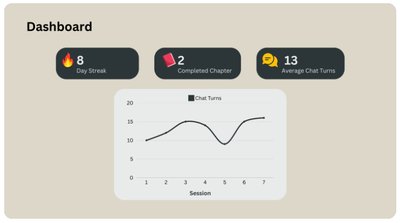
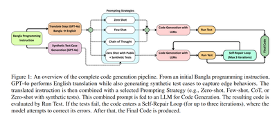
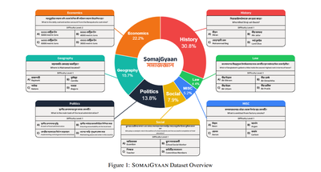
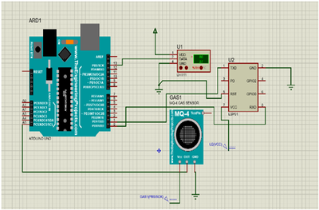

03Publications
Publications
(06)
Search by title, authors, or content
2025
05 / 06
Improving User Engagement and Learning Outcomes in LLM-Based Python Tutor: A Study of PACE

PACE: Python AI Companion for Enhanced Engagement

AlphaBorno at BLP-2025 Task 2: Code Generation with Structured Prompts and Execution Feedback

SOMAJGYAAN: A Dataset for Evaluating LLMs on Bangla Culture, Social Knowledge, and Low-Resource Language Adaptation
2023
01 / 06